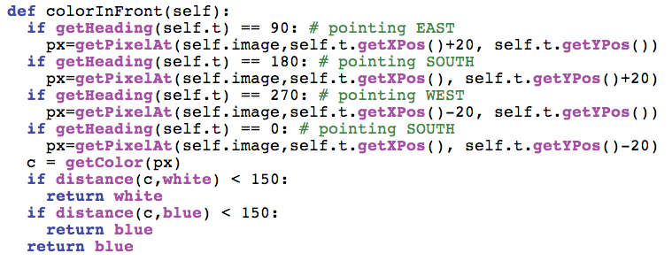
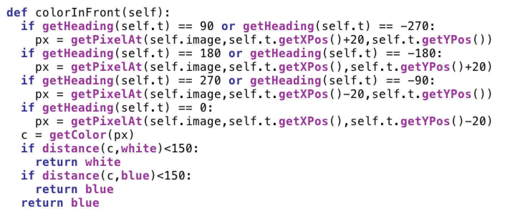
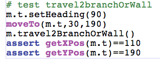

| This is the code to make colorInFront pass for all
directions. If you look into it, there are other possibilities we are not including. Pointing East can be with a heading of 90 or -270. You will want to eventually add these other conditions. |
 |
|  Now we have no failures and we can detect walls in front of the turtle. It’s time to discuss the algorithm for solving the maze. The algorithm will be recursive. Here’s a pseudo code implementation.
A method called travel2BranchOrWall will be useful. This will move the turtle forward until either it hits a wall or it sees a path to the right or the left. |
|
| Now write the first
test for
travel2branchorwall. If we
called travel2branchorwall from the starting position, we would expect
to stop at the right-hand turn. Write a test to check if the turtle is
there after calling travel2branchorwall. |
 |